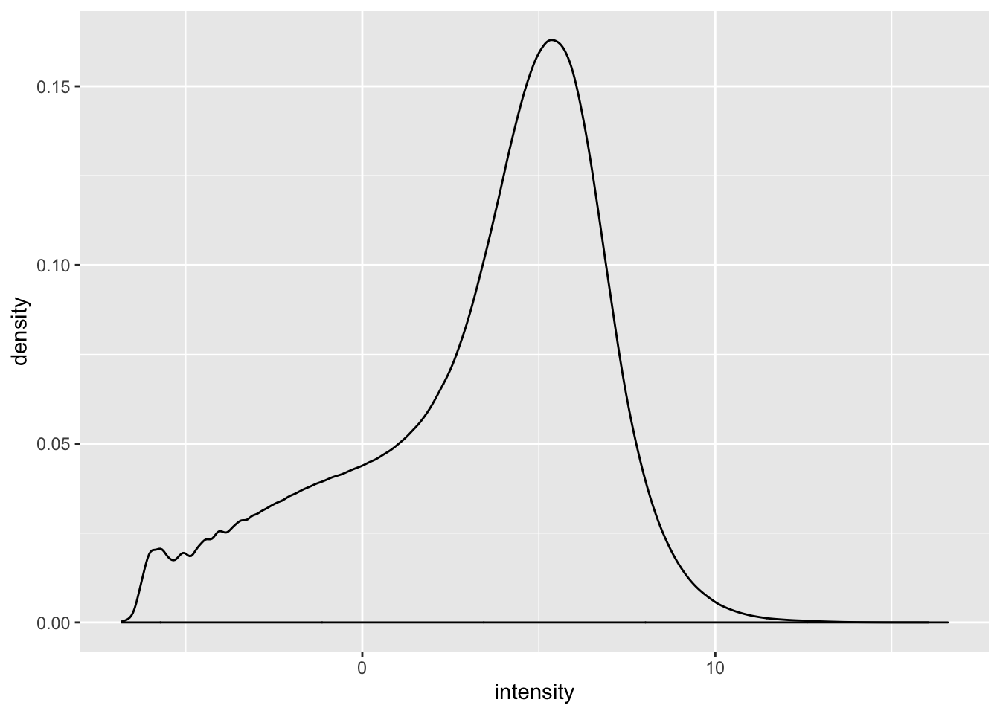

ssGSEA
mleukam
2019-06-09
Last updated: 2019-11-09
Checks: 7 0
Knit directory: tcga_macs/
This reproducible R Markdown analysis was created with workflowr (version 1.5.0). The Checks tab describes the reproducibility checks that were applied when the results were created. The Past versions tab lists the development history.
Great! Since the R Markdown file has been committed to the Git repository, you know the exact version of the code that produced these results.
Great job! The global environment was empty. Objects defined in the global environment can affect the analysis in your R Markdown file in unknown ways. For reproduciblity it’s best to always run the code in an empty environment.
The command set.seed(20190409) was run prior to running the code in the R Markdown file. Setting a seed ensures that any results that rely on randomness, e.g. subsampling or permutations, are reproducible.
Great job! Recording the operating system, R version, and package versions is critical for reproducibility.
Nice! There were no cached chunks for this analysis, so you can be confident that you successfully produced the results during this run.
Great job! Using relative paths to the files within your workflowr project makes it easier to run your code on other machines.
Great! You are using Git for version control. Tracking code development and connecting the code version to the results is critical for reproducibility. The version displayed above was the version of the Git repository at the time these results were generated.
Note that you need to be careful to ensure that all relevant files for the analysis have been committed to Git prior to generating the results (you can use wflow_publish or wflow_git_commit). workflowr only checks the R Markdown file, but you know if there are other scripts or data files that it depends on. Below is the status of the Git repository when the results were generated:
Ignored files:
Ignored: .DS_Store
Ignored: .Rhistory
Ignored: .Rproj.user/
Ignored: all.pdf
Ignored: analysis/.DS_Store
Ignored: data/.DS_Store
Ignored: data/160genes_ensembl.gencode28.txt
Ignored: data/GSE46903_Affymetrix_Reanalyzed_data.txt.gz
Ignored: data/GSE46903_Affymetrix_metadata.txt.gz
Ignored: data/GSE46903_RAW.tar
Ignored: data/GSE46903_non-normalized.txt
Ignored: data/gencode.v22.primary_assembly.annotation.gtf.geneinfo
Ignored: data/gse_46903.rds
Ignored: data/htseq_counts/
Ignored: data/kyle.gdc_tcga_bam_metadata.txt
Ignored: output/AUC_comparison.pdf
Ignored: output/Combined_down_plots.pdf
Ignored: output/Combined_up_plots.pdf
Ignored: output/Fig1.png
Ignored: output/PFS_CoxPH.pdf
Ignored: output/Rplot.pdf
Ignored: output/arrange.pdf
Ignored: output/ave_scores_gsva_by_tumor.rds
Ignored: output/beeswarm_plot.pdf
Ignored: output/beeswarm_pub.pdf
Ignored: output/boxplot_total_pub.pdf
Ignored: output/combined_boxplots.pdf
Ignored: output/combined_up_plot.pdf
Ignored: output/coxph_pfs.pdf
Ignored: output/cpxph_os.pdf
Ignored: output/cv.lasso.merck.rds
Ignored: output/cv.lasso.rds
Ignored: output/dge_frame.csv
Ignored: output/downreg_c1.csv
Ignored: output/downreg_c2.csv
Ignored: output/downreg_c3.csv
Ignored: output/downreg_c4.csv
Ignored: output/downreg_c5.csv
Ignored: output/downreg_c6.csv
Ignored: output/downreg_c7.csv
Ignored: output/expr_matrix.rds
Ignored: output/expression_set.rds
Ignored: output/figures/
Ignored: output/filtered.total.phenodata.csv
Ignored: output/filtered.total.phenodata.rds
Ignored: output/flat_total_counts.rds
Ignored: output/flat_total_pheno.rds
Ignored: output/gset_ids_complete.rds
Ignored: output/gset_ids_plusnew.rds
Ignored: output/heatmaps_fig3.pdf
Ignored: output/hm_chol.pdf
Ignored: output/imtx_expressionset.rds
Ignored: output/imtx_gsva_17geneset_results.rds
Ignored: output/imtx_matrix.csv
Ignored: output/km_cluster_assignments.csv
Ignored: output/lasso.min.model.merck.rds
Ignored: output/lasso.min.model.rds
Ignored: output/lasso.test.data.merck.rds
Ignored: output/lasso.test.data.rds
Ignored: output/lasso.train.data.merck.rds
Ignored: output/lasso.train.data.rds
Ignored: output/mac_eset.rds
Ignored: output/mac_eset_w_clusters.rds
Ignored: output/nested_list_dge_top50_updown.rds
Ignored: output/normalized_probe_intensities.Rds
Ignored: output/os_km_curves.pdf
Ignored: output/os_km_plots.pdf
Ignored: output/processed_lumi_46903.Rds
Ignored: output/processed_lumi_46903.tsv
Ignored: output/processed_lumi_exprs.txt
Ignored: output/pub_boxplot.pdf
Ignored: output/score_matrix.csv
Ignored: output/selected.total.counts.csv
Ignored: output/summary heatmap.pdf
Ignored: output/table_c1.csv
Ignored: output/table_c2.csv
Ignored: output/table_c3.csv
Ignored: output/table_c4.csv
Ignored: output/table_c5.csv
Ignored: output/table_c6.csv
Ignored: output/table_c7.csv
Ignored: output/tcga_counts_dataframe_list.rds
Ignored: output/tcga_counts_list.rds
Ignored: output/tcga_gdc_manifest.rds
Ignored: output/tcga_gsva_17geneset_results.rds
Ignored: output/tcga_metadata_list.rds
Ignored: output/tcga_total_counts.csv
Ignored: output/univariate_p_values.pdf
Ignored: output/upreg_c1.csv
Ignored: output/upreg_c2.csv
Ignored: output/upreg_c3.csv
Ignored: output/upreg_c4.csv
Ignored: output/upreg_c5.csv
Ignored: output/upreg_c6.csv
Ignored: output/upreg_c7.csv
Untracked files:
Untracked: analysis/expanded_gsva.Rmd
Untracked: analysis/expanded_gsva_analysis.Rmd
Untracked: analysis/gsva_results_exploration.Rmd
Untracked: analysis/survival.Rmd
Untracked: data/IMTX_datasets/
Untracked: data/xcel_signatures.xlsx
Untracked: output/PFS_CoxPH-concordance.tex
Untracked: output/PFS_CoxPH.Rnw
Untracked: output/PFS_CoxPH.log
Untracked: output/PFS_CoxPH.synctex.gz
Untracked: output/PFS_CoxPH.tex
Untracked: output/Rplot01.png
Untracked: output/coxph_pfs-concordance.tex
Untracked: output/coxph_pfs.Rnw
Untracked: output/coxph_pfs.log
Untracked: output/coxph_pfs.synctex.gz
Untracked: output/coxph_pfs.tex
Untracked: output/cpxph_os-concordance.tex
Untracked: output/cpxph_os.Rnw
Untracked: output/cpxph_os.log
Untracked: output/cpxph_os.synctex.gz
Untracked: output/cpxph_os.tex
Untracked: output/univariate_p_values-concordance.tex
Untracked: output/univariate_p_values.Rnw
Untracked: output/univariate_p_values.log
Untracked: output/univariate_p_values.synctex.gz
Untracked: output/univariate_p_values.tex
Unstaged changes:
Modified: .gitignore
Modified: analysis/tcga_format.Rmd
Note that any generated files, e.g. HTML, png, CSS, etc., are not included in this status report because it is ok for generated content to have uncommitted changes.
These are the previous versions of the R Markdown and HTML files. If you’ve configured a remote Git repository (see ?wflow_git_remote), click on the hyperlinks in the table below to view them.
| File | Version | Author | Date | Message |
|---|---|---|---|---|
| Rmd | e196ab1 | mleukam | 2019-11-09 | patially done updating all the new mac groups |
| Rmd | 13fe6d0 | mleukam | 2019-06-19 | updated box plots for presention |
| html | 7215e38 | mleukam | 2019-06-15 | Build site. |
| Rmd | db2b959 | mleukam | 2019-06-15 | additional figures |
| Rmd | 3f5af70 | mleukam | 2019-06-13 | gsva R scripts |
| html | 8d832f2 | mleukam | 2019-06-13 | Build site. |
| Rmd | 6288da1 | mleukam | 2019-06-12 | partially working GVSA analysis |
| html | f7f6d34 | mleukam | 2019-06-10 | Build site. |
| Rmd | b3f3025 | mleukam | 2019-06-10 | start of gsea notebook, reading in files |
| Rmd | 64eaee8 | mleukam | 2019-06-10 | multiple updates |
Setup
Clear environment
# clear environment
rm(list = ls())Load packages
library("tidyverse")── Attaching packages ───────────────────────── tidyverse 1.2.1 ──✔ ggplot2 3.2.1 ✔ purrr 0.3.3
✔ tibble 2.1.3 ✔ dplyr 0.8.3
✔ tidyr 1.0.0 ✔ stringr 1.4.0
✔ readr 1.3.1 ✔ forcats 0.4.0── Conflicts ──────────────────────────── tidyverse_conflicts() ──
✖ dplyr::filter() masks stats::filter()
✖ dplyr::lag() masks stats::lag()library("edgeR")Loading required package: limmalibrary("limma")
library("GSVA")
library("GenomicDataCommons")Loading required package: magrittr
Attaching package: 'magrittr'The following object is masked from 'package:purrr':
set_namesThe following object is masked from 'package:tidyr':
extract
Attaching package: 'GenomicDataCommons'The following objects are masked from 'package:dplyr':
count, filter, selectThe following object is masked from 'package:tidyr':
expandThe following object is masked from 'package:stats':
filterGene list preprocessing
Read in custom gene lists
up_files <- list.files("output/", "^upreg_c")
down_files <- list.files("output/", "downreg_c")
file_list <- c(up_files, down_files)
path_list <- paste0("output/", file_list)
dge_list <- map(path_list, read_csv)Parsed with column specification:
cols(
gene = col_character(),
logFC = col_double(),
AveExpr = col_double(),
t = col_double(),
P.Value = col_double(),
adj.P.Val = col_double(),
B = col_double()
)
Parsed with column specification:
cols(
gene = col_character(),
logFC = col_double(),
AveExpr = col_double(),
t = col_double(),
P.Value = col_double(),
adj.P.Val = col_double(),
B = col_double()
)
Parsed with column specification:
cols(
gene = col_character(),
logFC = col_double(),
AveExpr = col_double(),
t = col_double(),
P.Value = col_double(),
adj.P.Val = col_double(),
B = col_double()
)
Parsed with column specification:
cols(
gene = col_character(),
logFC = col_double(),
AveExpr = col_double(),
t = col_double(),
P.Value = col_double(),
adj.P.Val = col_double(),
B = col_double()
)
Parsed with column specification:
cols(
gene = col_character(),
logFC = col_double(),
AveExpr = col_double(),
t = col_double(),
P.Value = col_double(),
adj.P.Val = col_double(),
B = col_double()
)
Parsed with column specification:
cols(
gene = col_character(),
logFC = col_double(),
AveExpr = col_double(),
t = col_double(),
P.Value = col_double(),
adj.P.Val = col_double(),
B = col_double()
)
Parsed with column specification:
cols(
gene = col_character(),
logFC = col_double(),
AveExpr = col_double(),
t = col_double(),
P.Value = col_double(),
adj.P.Val = col_double(),
B = col_double()
)
Parsed with column specification:
cols(
gene = col_character(),
logFC = col_double(),
AveExpr = col_double(),
t = col_double(),
P.Value = col_double(),
adj.P.Val = col_double(),
B = col_double()
)
Parsed with column specification:
cols(
gene = col_character(),
logFC = col_double(),
AveExpr = col_double(),
t = col_double(),
P.Value = col_double(),
adj.P.Val = col_double(),
B = col_double()
)
Parsed with column specification:
cols(
gene = col_character(),
logFC = col_double(),
AveExpr = col_double(),
t = col_double(),
P.Value = col_double(),
adj.P.Val = col_double(),
B = col_double()
)
Parsed with column specification:
cols(
gene = col_character(),
logFC = col_double(),
AveExpr = col_double(),
t = col_double(),
P.Value = col_double(),
adj.P.Val = col_double(),
B = col_double()
)
Parsed with column specification:
cols(
gene = col_character(),
logFC = col_double(),
AveExpr = col_double(),
t = col_double(),
P.Value = col_double(),
adj.P.Val = col_double(),
B = col_double()
)
Parsed with column specification:
cols(
gene = col_character(),
logFC = col_double(),
AveExpr = col_double(),
t = col_double(),
P.Value = col_double(),
adj.P.Val = col_double(),
B = col_double()
)
Parsed with column specification:
cols(
gene = col_character(),
logFC = col_double(),
AveExpr = col_double(),
t = col_double(),
P.Value = col_double(),
adj.P.Val = col_double(),
B = col_double()
)names(dge_list) <- str_replace_all(file_list, ".csv", "")Read in lookup table for features, gencode v22 (used by GDC to label features)
gencode_gtf <- read_tsv("data/gencode.v22.primary_assembly.annotation.gtf.geneinfo")Parsed with column specification:
cols(
gene_id = col_character(),
gene_type = col_character(),
gene_status = col_character(),
gene_name = col_character(),
level = col_double(),
havana_gene = col_character()
)Warning: 10327 parsing failures.
row col expected actual file
5304 -- 6 columns 5 columns 'data/gencode.v22.primary_assembly.annotation.gtf.geneinfo'
12445 -- 6 columns 5 columns 'data/gencode.v22.primary_assembly.annotation.gtf.geneinfo'
12913 -- 6 columns 5 columns 'data/gencode.v22.primary_assembly.annotation.gtf.geneinfo'
13082 -- 6 columns 5 columns 'data/gencode.v22.primary_assembly.annotation.gtf.geneinfo'
13310 -- 6 columns 5 columns 'data/gencode.v22.primary_assembly.annotation.gtf.geneinfo'
..... ... ......... ......... ...........................................................
See problems(...) for more details.# read in T-cell inflammation signature
tcell <- read_tsv("data/160genes_ensembl.gencode28.txt", col_names = FALSE)Parsed with column specification:
cols(
X1 = col_character(),
X2 = col_character(),
X3 = col_character()
)# convert to gene_id
gene_ids <- gencode_gtf %>%
dplyr::select(gene_id, gene_name)
tcell <- tcell %>% dplyr::rename(gene_name = X1)
tcell_gset <- tcell %>% left_join(gene_ids, by = "gene_name") %>%
pull(gene_id)
tcell_gset <- tcell_gset[!is.na(tcell_gset)]# define function that uses lookup table to convert gene symbols to gene id
# then returns a list of gene ids that define the gene set
ensemblgset <- function(df, gtf){
gene_ids <- gtf %>%
dplyr::select(gene_id, gene_name) %>%
dplyr::rename(gene = gene_name)
gset <- df %>% left_join(gene_ids) %>%
pull(gene_id)
gset
}
# apply function to list of gene sets
gset_ids <- map(dge_list, function(x){ensemblgset(x, gtf = gencode_gtf)})Joining, by = "gene"
Joining, by = "gene"
Joining, by = "gene"
Joining, by = "gene"
Joining, by = "gene"
Joining, by = "gene"
Joining, by = "gene"
Joining, by = "gene"
Joining, by = "gene"
Joining, by = "gene"
Joining, by = "gene"
Joining, by = "gene"
Joining, by = "gene"
Joining, by = "gene"# remove nas (small number of gene symbols do not map to gencode gene ids)
gset_ids <- map(gset_ids, function(x){
x[!is.na(x)]
})
# add T-cell signature to gset list
gset_ids_complete <- c(gset_ids, tcell_gset = list(tcell_gset))Count data preprocessing
Preprocessing following methods outlined here: https://f1000research.com/articles/5-1408/v3
Read in data
total_counts <- read_csv("output/selected.total.counts.csv")Parsed with column specification:
cols(
.default = col_double(),
gene = col_character()
)See spec(...) for full column specifications.Filter for protein coding genes
# filter for protein coding genes
total_counts_prcode <- total_counts %>%
dplyr::rename(gene_id = gene) %>%
left_join(gencode_gtf, by = "gene_id") %>%
dplyr::filter(gene_type == "protein_coding") %>%
dplyr::select(-gene_name, -gene_type, -gene_status, -level, -havana_gene) %>%
dplyr::select(gene_id, everything())
nrow(total_counts_prcode)[1] 19814Correct for library size: convert to CPM
# normalize rows by log cpm using EdgeR
df_data <- total_counts_prcode %>%
dplyr::select(-gene_id) %>% as.matrix()
df_names <- total_counts_prcode %>% dplyr::select(gene_id)
out_data <- cpm(df_data, log = FALSE) %>% as_tibble()
total_counts_prcode_cpm <- bind_cols(df_names, out_data)Density plots
# Density plots
# tidy data
tidy_cpm <- total_counts_prcode_cpm %>%
gather(key = "sampleID", value = "intensity", -gene_id)
tidy_cpm <- tidy_cpm %>%
mutate(group = str_sub(sampleID, 1, 4))
# representative plots
brca_cpm <- tidy_cpm %>%
dplyr::filter(group == "BRCA")
dplot_brca <- ggplot(brca_cpm, aes(intensity)) +
geom_density() +
theme(legend.position = "none")
dplot_brca
gbm_cpm <- tidy_cpm %>%
dplyr::filter(grepl("GBM*", group))
dplot_gbm <- ggplot(gbm_cpm, aes(intensity)) +
geom_density() +
theme(legend.position = "none") +
xlim(-6, 15)
dplot_gbmWarning: Removed 1570260 rows containing non-finite values (stat_density).
Filter by expression levels
# move gene names to rownames
totcounts_prcode_cpm_matrix <- total_counts_prcode_cpm %>%
as.data.frame() %>%
column_to_rownames(var = "gene_id")
totcounts_prcode_cpm_matrix[1:5, 1:5] BRCA1 BRCA2 BRCA4 BRCA5 BRCA6
ENSG00000000003.13 37.019035 86.2823791 55.8841542 35.525131 25.71919321
ENSG00000000005.5 4.102186 0.5067543 0.1215401 2.208254 0.06486556
ENSG00000000419.11 23.576924 37.8277212 17.2100831 24.495930 40.00583206
ENSG00000000457.12 29.538578 38.3344755 9.4315145 34.270167 36.30849533
ENSG00000000460.15 9.708980 19.2566650 2.2606465 13.539130 21.60023036# filter out genes that aren't at least expressed greater than 1 in at least 45 cases (45 being about the size of the smallest group)
total_cpm_stats <- data.frame(
total = apply(totcounts_prcode_cpm_matrix, 1, function(x) sum(x > 1, na.rm = TRUE)))
keep <- which(total_cpm_stats$total >= 45)
dim(totcounts_prcode_cpm_matrix)[1] 19814 9609total_cpm_filtered = totcounts_prcode_cpm_matrix[keep,]
dim(total_cpm_filtered)[1] 18017 9609Normalize gene expression distributions
Normalisation by the method of trimmed mean of M-values (TMM) is performed using the calcNormFactors function in edgeR. The normalisation factors calculated here are used as a scaling factor for the library sizes.
# get normalization factors
norm_factors <- calcNormFactors(total_cpm_filtered, method = "TMM")
# apply factor to each column
total_cpm_norm <- map2_dfc(total_cpm_filtered, norm_factors, `*`)
total_cpm_norm <- as.data.frame(total_cpm_norm)
rownames(total_cpm_norm) <- rownames(total_cpm_filtered)
total_cpm_norm[1:5, 1:5] BRCA1 BRCA2 BRCA4 BRCA5 BRCA6
ENSG00000000003.13 44.345921 97.8872495 51.5969898 41.637123 30.30620657
ENSG00000000005.5 4.914099 0.5749122 0.1122162 2.588177 0.07643432
ENSG00000000419.11 28.243318 42.9155017 15.8898081 28.710380 47.14086482
ENSG00000000457.12 35.384916 43.4904138 8.7079739 40.166246 42.78410877
ENSG00000000460.15 11.630602 21.8466620 2.0872206 15.868496 25.45262746Log transformation
total_log_cpm_filtered_norm <- log2(total_cpm_norm)Review representative density plots
# Density plots
# tidy data
final_total_df <- total_log_cpm_filtered_norm %>%
rownames_to_column(var = "gene_id") %>%
dplyr::select(gene_id, everything())
tidy_norm_cpm <- final_total_df %>%
gather(key = "sampleID", value = "intensity", -gene_id)
tidy_norm_cpm <- tidy_norm_cpm %>%
mutate(group = str_sub(sampleID, 1, 4))
# representative plots
brca_norm_cpm <- tidy_norm_cpm %>%
dplyr::filter(group == "BRCA")
dplot_norm_brca <- ggplot(brca_norm_cpm, aes(intensity)) +
geom_density() +
theme(legend.position = "none")
dplot_norm_brcaWarning: Removed 1082325 rows containing non-finite values (stat_density).
gbm_norm_cpm <- tidy_norm_cpm %>%
dplyr::filter(grepl("GBM*", group))
dplot_norm_gbm <- ggplot(gbm_norm_cpm, aes(intensity)) +
geom_density() +
theme(legend.position = "none") +
xlim(-6, 15)
dplot_norm_gbmWarning: Removed 147916 rows containing non-finite values (stat_density).
GSVA
Will be done on cluster due to extreme system requirements Write out matrix and gene set lists for import into Gardner HPC cluster.
# gset list
saveRDS(gset_ids_complete, "output/gset_ids_complete.rds")
expr_matrix <- total_log_cpm_filtered_norm %>%
as.data.frame() %>%
rownames_to_column(var = "gene")
write_csv(expr_matrix, "output/expr_matrix.csv")Get macrophage gene set GSVA scores
# Run on cluster
# tcga_es <- gsva(expr_matrix, gset_ids_complete,
# annotation = NULL,
# method = "gsva",
# mx.diff = FALSE,
# verbose = TRUE)
# saveRDS(tcga_es, "/gpfs/data/kline-lab/tcga_macs/tcga_es.rds")
# moved to local hard drive from cluster and stored in output folder
sessionInfo()R version 3.5.3 (2019-03-11)
Platform: x86_64-apple-darwin15.6.0 (64-bit)
Running under: macOS Mojave 10.14.4
Matrix products: default
BLAS: /Library/Frameworks/R.framework/Versions/3.5/Resources/lib/libRblas.0.dylib
LAPACK: /Library/Frameworks/R.framework/Versions/3.5/Resources/lib/libRlapack.dylib
locale:
[1] en_US.UTF-8/en_US.UTF-8/en_US.UTF-8/C/en_US.UTF-8/en_US.UTF-8
attached base packages:
[1] stats graphics grDevices utils datasets methods base
other attached packages:
[1] GenomicDataCommons_1.6.0 magrittr_1.5
[3] GSVA_1.30.0 edgeR_3.24.3
[5] limma_3.38.3 forcats_0.4.0
[7] stringr_1.4.0 dplyr_0.8.3
[9] purrr_0.3.3 readr_1.3.1
[11] tidyr_1.0.0 tibble_2.1.3
[13] ggplot2_3.2.1 tidyverse_1.2.1
loaded via a namespace (and not attached):
[1] nlme_3.1-141 matrixStats_0.55.0
[3] bitops_1.0-6 fs_1.3.1
[5] lubridate_1.7.4 bit64_0.9-7
[7] RColorBrewer_1.1-2 httr_1.4.1
[9] GenomeInfoDb_1.18.2 rprojroot_1.3-2
[11] tools_3.5.3 backports_1.1.5
[13] R6_2.4.0 DBI_1.0.0
[15] lazyeval_0.2.2 BiocGenerics_0.28.0
[17] colorspace_1.4-1 withr_2.1.2
[19] tidyselect_0.2.5 bit_1.1-14
[21] compiler_3.5.3 git2r_0.26.1
[23] graph_1.60.0 cli_1.1.0
[25] rvest_0.3.4 Biobase_2.42.0
[27] xml2_1.2.2 DelayedArray_0.8.0
[29] labeling_0.3 scales_1.0.0
[31] rappdirs_0.3.1 digest_0.6.21
[33] rmarkdown_1.16 XVector_0.22.0
[35] pkgconfig_2.0.3 htmltools_0.4.0
[37] fastmap_1.0.1 rlang_0.4.0
[39] readxl_1.3.1 rstudioapi_0.10
[41] RSQLite_2.1.2 shiny_1.4.0
[43] generics_0.0.2 jsonlite_1.6
[45] BiocParallel_1.16.6 RCurl_1.95-4.12
[47] GenomeInfoDbData_1.2.0 Matrix_1.2-17
[49] Rcpp_1.0.2 munsell_0.5.0
[51] S4Vectors_0.20.1 lifecycle_0.1.0
[53] stringi_1.4.3 whisker_0.4
[55] yaml_2.2.0 SummarizedExperiment_1.12.0
[57] zlibbioc_1.28.0 grid_3.5.3
[59] blob_1.2.0 parallel_3.5.3
[61] promises_1.1.0 crayon_1.3.4
[63] lattice_0.20-38 haven_2.1.1
[65] annotate_1.60.1 hms_0.5.2
[67] locfit_1.5-9.1 zeallot_0.1.0
[69] knitr_1.25 pillar_1.4.2
[71] GenomicRanges_1.34.0 geneplotter_1.60.0
[73] stats4_3.5.3 XML_3.98-1.20
[75] glue_1.3.1 evaluate_0.14
[77] modelr_0.1.5 vctrs_0.2.0
[79] httpuv_1.5.2 cellranger_1.1.0
[81] gtable_0.3.0 assertthat_0.2.1
[83] xfun_0.10 mime_0.7
[85] xtable_1.8-4 broom_0.5.2
[87] later_1.0.0 shinythemes_1.1.2
[89] AnnotationDbi_1.44.0 memoise_1.1.0
[91] IRanges_2.16.0 workflowr_1.5.0
[93] ellipsis_0.3.0 GSEABase_1.44.0